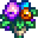

Bouquet
| Bouquet | |
 |
|
| A gift that shows your romantic interest. | |
| Information | |
| Source | Pierre's General Store |
| Season | |
| Sell Price | |
The Bouquet is a special present you may give only to a marriage candidate with whom you have gained an 8-heart friendship. A bouquet can be purchased at Pierre's General Store for  200g any time after reaching an 8-heart friendship with a marriage candidate.
200g any time after reaching an 8-heart friendship with a marriage candidate.
Giving a bouquet to a marriage candidate indicates romantic interest and changes the recipient's status to "boyfriend" or "girlfriend" on the "Social" tab of the pause menu. You may give a bouquet to any or all qualified candidates, but only once to each. Giving a bouquet awards 25 friendship points, but does not count as a normal gift. It unfreezes the friendship level with each recipient, allowing it to increase to 10 hearts, and to decay. Note that pre-bouquet, friendship points with a marriage candidate can continue to increase to just below 9 hearts (2249 points).
Trying to give a bouquet to someone that is not listed as single will simply say that you cannot date that person. Persisting in attempting to give a bouquet to a non-marriage candidate may produce additional dialogue, such as "I don't get it" or "Is this a joke?"
Giving a bouquet to a marriage candidate when you have less than 4 hearts of friendship with them causes them to respond "...I don't really know you well enough..." or "Uh... This is awkward. Look, I don't really know you that well...". If you have between 4 and 8 hearts of friendship, the marriage candidate will respond "Oh? ...Sorry... I'm not ready for that." or "...I didn't know. Uh... Sorry. No.".
The bouquet can be sold for  100g via the shipping box. Pierre will not buy them back.
100g via the shipping box. Pierre will not buy them back.
A bouquet can be used to create a Wilted Bouquet, which is used to break up with a girlfriend or boyfriend. The Wilted Bouquet is created by placing a bouquet in a furnace along with one coal.
Group 10-Heart Event
Bachelorettes
If the player is unmarried and has given a bouquet to all available bachelorettes, raised friendship with each bachelorette to 10 hearts, and seen each bachelorette's 10-heart event, then entering Haley/Emily's House will trigger a cutscene. If Haley is the final bachelorette you share a Ten-Heart Event with, the Group Ten-Heart Event will be unavoidable as it is triggered immediately afterwards.
| Details |
| If the player has a Rabbit's Foot in inventory, the cutscene will consist of a gossip session about Mayor Lewis and Marnie's relationship.
If the player does not have a Rabbit's Foot in inventory, all bachelorettes will express anger about the player dating them all at one time. Regardless of the player's dialogue choice(s), all bachelorettes will decide to give the player the "cold shoulder" for about a week after the event. They will give angry dialogue when interacted with, and refuse gifts. After about a week, all bachelorettes will forgive the player, and dialogues return to normal. |
This event will trigger only one time per save file. This event will not trigger if you are married or have given a Wilted Bouquet or Mermaid's Pendant to one of the marriage candidates.
Bachelors
If the player is unmarried and has given a bouquet to all available bachelors, raised friendship with each bachelor to 10 hearts, and seen each bachelor's 10-heart event, then entering The Stardrop Saloon will trigger a cutscene. If Alex is the final bachelor you share a Ten-Heart Event with, the Group Ten-Heart Event will be unavoidable as it is triggered immediately afterwards.
| Details |
| If the player has a Rabbit's Foot in inventory, the cutscene will consist of a friendly game of pool.
If the player does not have a Rabbit's Foot in inventory, all bachelors will express anger about the player dating them all at one time. Regardless of the player's dialogue choice(s), all bachelors will decide to give the player the "cold shoulder" for about a week after the event. They will give angry dialogue when interacted with, and refuse gifts. After about a week, all bachelors will forgive the player, and dialogues return to normal. |
This event will trigger only one time per save file. This event will not trigger if you are married or have given a Wilted Bouquet or Mermaid's Pendant to one of the marriage candidates.
Tailoring
It is used in the spool of the Sewing Machine to create the Suit Top. It can also be used as a red dye color at the dye pots in Emily's and Haley's house, 2 Willow Lane.
Tip
- On the day you give a bouquet, doing so before you have any other interaction with the villager immediately unfreezes any friendship levels that may already exist. You are then free to proceed with normal talking and gift-giving, which then maximizes the friendship points you gain under the combined circumstances.
Trivia
- The first version of the group 10-heart event (released during beta testing) was much more harsh. It would cause the player to lose 250 friendship points with each bachelor/bachelorette, and cancel any engagement the player had with a villager. The bachelors/bachelorettes would exclaim they were all "breaking up" with the player, instead of giving the "cold shoulder." The event would also reset all bachelors/bachelorettes to 8 hearts of friendship, and "girlfriend" or "boyfriend" status would be removed. In this harsher version, the rabbit's foot would do nothing.
- Marriage candidates may make requests at the "Help Wanted" board outside Pierre's General Store during the "cold shoulder" week. Upon fulfulling the quest, the marriage candidate will express gratitude and offer payment as usual, before returning to angry/hurt dialogue.
- Marriage candidates may also send gifts in the mail during the "cold shoulder" week.
- While married, the player is still able to gift bouquets to other bachelors and bachelorettes.